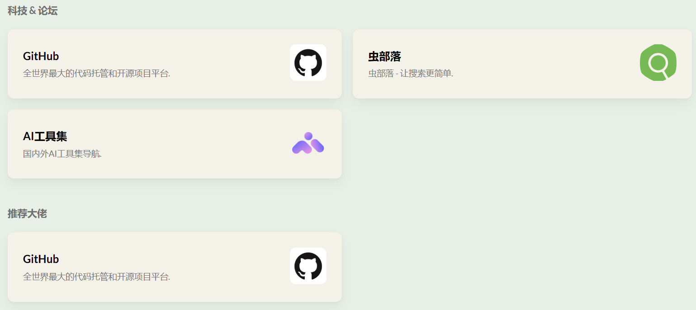

文章插入图片
如果想要在文章插入图片，有两种方式：
缺点是这种方式插入的图片不可以调节大小，默认占满页面宽度，很不美观。
1
|
<img src="1.png" width="80%" align="middle" style="zoom:60%;" />
|
如果是在markdown文件里，是居中且缩放到原图的60%大小，但在网页上居中不起作用。
1
|
<center><img src="1.png" width="80%" align="middle" style="zoom:60%;" /></center>
|
这样就可以实现图片居中且缩放成任意比例。
友链布局修改
1
2
3
4
5
6
7
8
9
10
11
12
13
14
15
16
17
18
19
20
|
title: 友链
slug: "links"
layout: "links"
menu:
main:
weight: -50
params:
icon: link
comments: false
links:
- title: GitHub
description: 全世界最大的代码托管和开源项目平台.
website: https://github.com
image: https://github.githubassets.com/images/modules/logos_page/GitHub-Mark.png
sites:
- title: GitHub
description: 全世界最大的代码托管和开源项目平台.
website: https://github.com
image: https://github.githubassets.com/images/modules/logos_page/GitHub-Mark.png
|
现在想要实现的效果如图所示，即按照类别来划分友链，如何实现呢？

- 首先，在
content/page/links/index.md文件中新建一个链接名，如links、sites等，然后把想要插入的友链放入；
- 然后，在
layouts/page/links.html文件中写入如下代码。其中，xxxs就是上面的链接名，如links、sites等；类别名就是想要的分类名称，如推荐大佬、科技&论坛；
1
2
3
4
5
6
7
|
<header>
<h2 class="section-title" style="margin-bottom: -20px;">类别名</h2>
</header>
{{ if .Params.xxxs }}
{{ partial "article/components/xxxs" . }}
{{ end }}
|
- 最后，在
layouts/partials/article/components文件下新建xxxs.html文件，文件不存在的就复制一下其他的（代码如下），然后将旧链接名修改为新建的链接名；
1
2
3
4
5
6
7
8
9
10
11
12
13
14
15
16
17
18
19
20
21
22
23
24
25
26
27
28
29
30
|
<div class="article-list--compact links">
{{ range $i, $hugo := .Params.hugos }}
<article>
<a href="{{ $hugo.website }}" target="_blank" rel="noopener">
<div class="article-details">
<h2 class="article-title">
{{- $hugo.title -}}
</h2>
<footer class="article-time">
{{ with $hugo.description }}
{{ . }}
{{ else }}
{{ $hugo.website }}
{{ end }}
</footer>
</div>
{{ with $hugo.image }}
{{ $permalink := . }}
{{ with ($.Resources.GetMatch (printf "%s" (. | safeURL))) }}
{{ $permalink = .RelPermalink }}
{{ end }}
<div class="article-image">
<img src="{{ $permalink }}" loading="lazy">
</div>
{{ end }}
</a>
</article>
{{ end }}
</div>
|
文章内链跳转
写文章的时候总有一个需求就是关联之前写的文章，那么在hugo中应该要怎么用呢？
方法一：markdown语法
使用[]()创建链接，比如hugo常用命令。此方法缺点就是文章标题和链接变了，所有地方都需要手动修改。在测试的时候甚至会出现点击后会出现404找不到界面。
方法二：hugo提供的ref功能
用法如下所示（哈哈去掉），此方法的好处就是文章的链接变了，这里会跟着变的，不需要手动修改。缺点是文章的标题不能同步变化。hugo常用命令
- 建议使用绝对路径（根目录为content目录），而非相对路径，否则容易出错
- 只有所引用的文件与当前文件在同一文件夹下时可以使用相对路径的方式（只有文件名）
1
|
[hugo常用命令]({{哈哈< ref "/post/2025-04/hugo快捷命令.md" >}})
|
文章内容管理
本文按时间线进行内容管理，其目录结构如下，需要注意以下几点：
1
2
3
4
5
6
7
8
9
10
11
12
13
14
15
16
17
18
19
20
21
22
23
24
25
26
27
28
29
30
31
32
33
34
35
36
37
|
content/
└── post
├── 2025-01
│ ├── hugo博客搭建.md
│ ├── git常用命令.md
│ └── tools文件夹
│ ├── 1.jpg
│ ├── 2.jpg
│ ├── 3.png
│ ├── index.md
│ └── 4.png
│
├── 2025-02
│ ├── 博客搭建1.md
│ ├── 博客搭建2.md
│ ├── 博客搭建3.md
│ ├── 博客搭建4.md
│ ├── 博客搭建5.md
│ ├── 博客搭建6.md
│ ├── 博客搭建7.md
│ ├── 博客搭建8.md
│ ├── 博客搭建9.md
│ └── 人生意义.md
└── 博客搭建10
├── index.md
└── 博客记录说明
├── 1.png
├── 2.png
├── 3.png
├── 4.png
├── 5.png
├── 6.png
├── 7.png
├── 8.png
├── 9.png
├── index.zh-cn.md
└── index.zh-tw.md
|
- post目录下先按照年份建立子目录， 也可以按照 年/月，或者 年/月/日建立
- 没有图片的文章直接在一级子目录下保存
- 有图片的多建一级目录, md文件命名为index.lang.md(使用其他命名文件，图片不能显示), 图片放在同一目录/子文件夹
- 不同语言的md文件，放在一起，统一用不同的index.lang.md区分， 比如 index.zh-cn.md, index.zh-tw.md
致谢
1、博客搭建教程
简单来说，分为几步：
- 下载解压hugo压缩包，cmd 打开命令行窗口，输入
hugo new site xxxx创建文件（这里是dev）
- 复制
hugo.exe文件到dev文件内
- 进入hugo官网，下载stack主题压缩包，将文件解压存储在
dev\themes文件下
- 将 exampleSite 样例数据中的
Content 和 hugo.yaml 复制到主文件夹中，并删掉hugo.toml
- 在
dev文件夹，输入hugo server -D，发现已经正确显示
- Github Action自动部署
莱特雷-letere
Hugo+Github博客部署
使用 Hugo + Github Pages 部署个人博客
2、修改美化
- 首先修改dev文件夹下的
hugo.yaml文件
- 其次，主要修改的是
assets、layouts、static文件夹，换新电脑时可以直接复制过去
assets/scss/custom.scss文件修改的是大部分美化样式layouts/_default/single.html文件修改的是：如果文章有目录，则把左侧边栏换为一个返回主页的按钮，如果文章没有目录，则启用左侧边栏layouts/page文件夹和layouts/partials文件夹修改的是友链分类相关的文件layouts/index.html文件修改的是：添加了首页欢迎字符面板themes/hugo-theme-stack/layouts/partials/article/components/details.html文件修改的是：添加文章字数统计功能；而该文件夹下footer.html修改的是：添加了一行代码以及新建categories.html文件实现在文章末尾也显示分类标签themes/hugo-theme-stack/layouts/partials/footer/footer.html删除了页脚信息，更简洁themes/hugo-theme-stack/layouts/partials/article/components/related-content.html整个文件删除或注释，这样文章底部就不会显示相关文章了assets/scss/partials文件夹以及layouts/partials/footer文件夹修改内容：添加博客运行时间以及样式
Stack 魔改美化-Naive Koala-2篇
Hugo Stack 主题美化-阿琦同学-很全-2篇
L1nSn0wの小窝 - Stack主题的自定义
Hugo的Stack主题美化零碎-wfg
使用 Hugo 对博客的重建与 Stack 主题优化记录-Exnadio’s Blog
Stack 主题的自定义-折腾日记
Hugo Stack 主题配置与使用 | Bore’s Notes
Hugo博客 | stack主题修改第一站-墨纹
Hugo Stack主题装修笔记-博客运行时间
Leonus 博客
张洪Heo - 分享设计与科技生活
安知鱼 - 生活明朗 万物可爱
Hugo Theme Cybe
3、图标网站
打开stack官方文档Stack 官方文档，在``Custom Menu`栏下可以找到推荐的图标网站
Icons网站